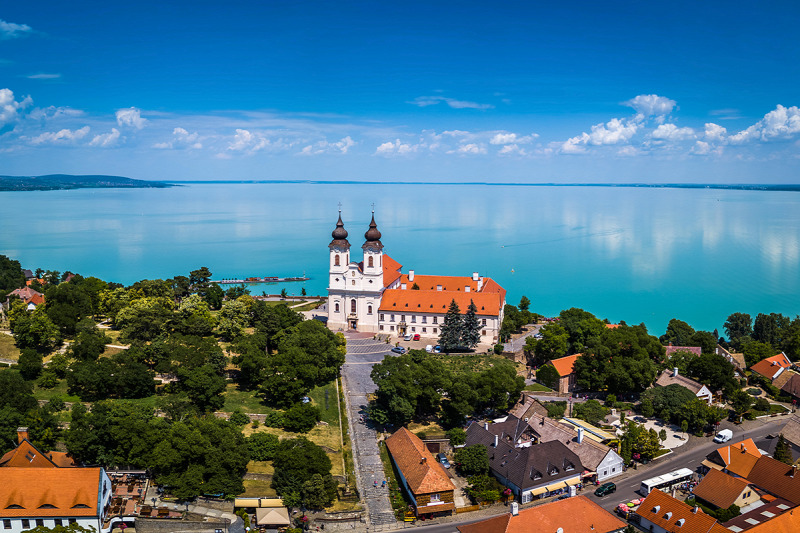

Tihany község a Balaton-felvidéken, Veszprém megyében, a Balatonfüredi járásban. Magyarország egyik legszebb fekvésű települése, látványos táji és természeti adottságokban bővelkedő község a Balatonba nyúló Tihanyi-félszigeten.
A Tihanyi Bencés Apátságot a Tihanyi-félsziget vulkanikus hegysorának kelet felé meredeken leszakadó peremén alapította I. András király 1055-ben, Szent Ányos és Szűz Mária tiszteletére. Jelenleg önálló monostor a Magyar Bencés Kongregáció részeként; a 10 fős közösséget Mihályi Jeromos perjel vezeti.
Megközelítés:
Szállás:
Összesen: 24.843Ft.

Megközelítés:
Szállás:
Összesen: 29.437Ft.